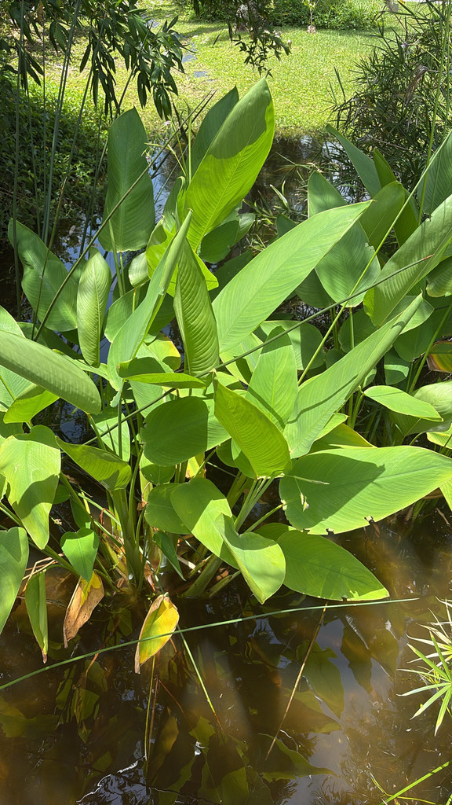

- The name is literal — when an alligator swims through a stand of Alligator Flag in the Everglades, the tall waving leaves trace its path through the marsh. Wildlife trackers read the flag.
- The Seminoles ate the roots, flowers, and rhizomes and used the enormous leaves to wrap food for cooking — one of Florida's most versatile native food plants.
- Host plant for the Brazilian Skipper butterfly, whose caterpillars roll the leaves into tubes to hide inside while they feed.
- Purple Gallinules — among the most spectacularly colored birds in North America — feed on the seeds and are frequently seen walking on the leaves.
Native to Florida throughout most of the peninsula and a few Panhandle counties. Also native to tropical Africa, Mexico, Central America, and the West Indies — an unusual range spanning two continents with a wide Atlantic gap. Found in fresh to slightly brackish marshes, pond edges, and slow-moving waterways.
- The name Alligator Flag is one of the most descriptive plant names in Florida's native flora. In the Everglades, these tall, broad leaves stand 8 to 10 feet above the water and sway dramatically when anything large moves through the stand — an alligator's path through a marsh is traced in real time by the waving leaves.
- Florida wildlife photographers and Everglades guides have relied on this visual signal for generations.
- The Seminole food uses are well-documented. Fresh roots, flowers, rhizomes, and stem bases were eaten. The enormous leaves were used to wrap food for pit-cooking, similar to how banana leaves are used across the tropics. It is one of the most culinarily versatile native plants in Florida.
- The genus is named for Johann Thal (1542–1583), a German physician and botanist who wrote one of the first regional plant catalogues in European history — the Sylva Hercynia, documenting the plants of the Harz Mountains in Germany in 1588. The species name geniculata means 'knee-jointed' in Latin, referring to the zigzag bends in the flower stalk.
The Alligator Flag is becoming an important wetland wildlife plant along Palma Sola's pond edges, starting to use since 2025. Get up close and personal to several near the pond bridge. It is the larval host for the Brazilian Skipper butterfly (Calpodes ethlius), whose caterpillars roll the leaves into silk-tied tubes and feed from inside — look for the rolled tubes as evidence of their presence.
The seeds are a documented food source for Purple Gallinules, which walk on aquatic vegetation to forage. The dense emergent stems provide nesting structure for Red-winged Blackbirds and other marsh birds. The rhizome mass stabilizes pond edges and provides shelter for fish, frogs, and invertebrates at the water line.
Spreads vigorously by rhizomes, forming dense clonal colonies in wet conditions. Deciduous in colder winters in North Florida.
Small, purple, on tall branching stalks that bend at angles (the geniculata — 'knee-jointed' — character). Appearing summer through fall. Visited by bees.
Enormous — blade 1 to 2 feet long on petioles up to 3 feet, reaching 6 to 10 feet total height. Oval, bright green, with prominent midrib. The large paddle-shaped leaves wave conspicuously in any air movement.
Fleshy, edible. The historically important food part.
The tall, broad, paddle-shaped leaves standing above the waterline are unmistakable in the pond margin. Look for rolled leaf tubes tied with silk — evidence of Brazilian Skipper caterpillars feeding inside. Watch for Purple Gallinule activity on and around the leaves. Note the zigzag bend in the flower stalk that gives the species its name.
The roots, rhizomes, flowers, and stem bases are edible with preparation — Seminoles ate them and used the leaves to wrap food — though it's rarely eaten today.
It's generally considered non-toxic to people, dogs, and cats.

- © Randall Carter (CC-BY-NC), via iNaturalist